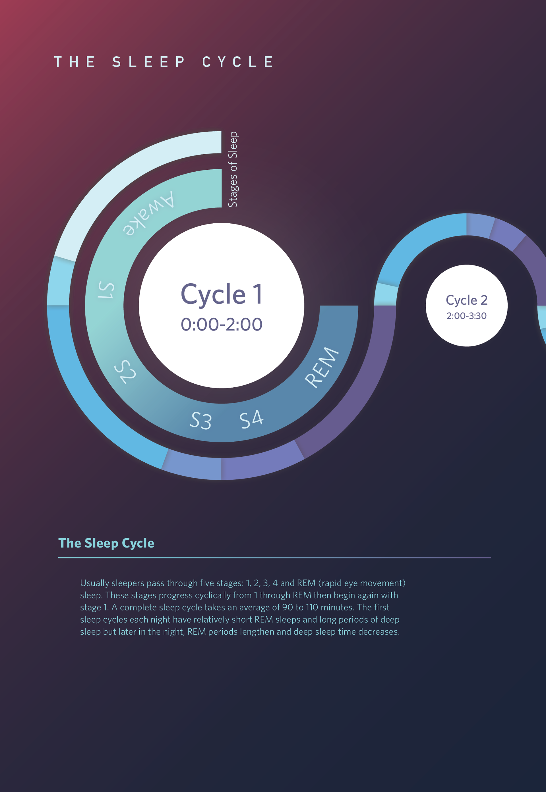

From the Blog

How to Calculate Your Sleep Cycle Without a Smartwatch | Bedtime Cycle
No wearable? No problem. A pen, paper, and 7 days of patience is all you need to find your natural cycle length.

REM vs. Deep Sleep: Why the Cycle Order Matters | Bedtime Cycle
Deep sleep comes first. REM comes later. Interrupt the order and you wake up feeling like a zombie.

The Perfect Nap: How Long, When, and Why | Bedtime Cycle
20 minutes or 90 minutes. Nothing in between. Here is the exact science of napping without grogginess.
I Tried 4 Sleep Tracking Apps for 30 Days. Here's the Honest Data. | Bedtime Cycle
One app said I got 8.2 hours. Another said 6.4. I wore a polysomnography headband to find the truth.

How to Adjust Your Sleep Before a Time Zone Change (Jet Lag Tool) | Bedtime Cycle
Start adjusting three days before your flight. Here is the exact light exposure schedule for east vs west travel.
The 20-Minute Nap Rule: Why Less Is More | Bedtime Cycle
I napped for 90 minutes every day for a month. Then I tried 20 minutes. The data was shocking.